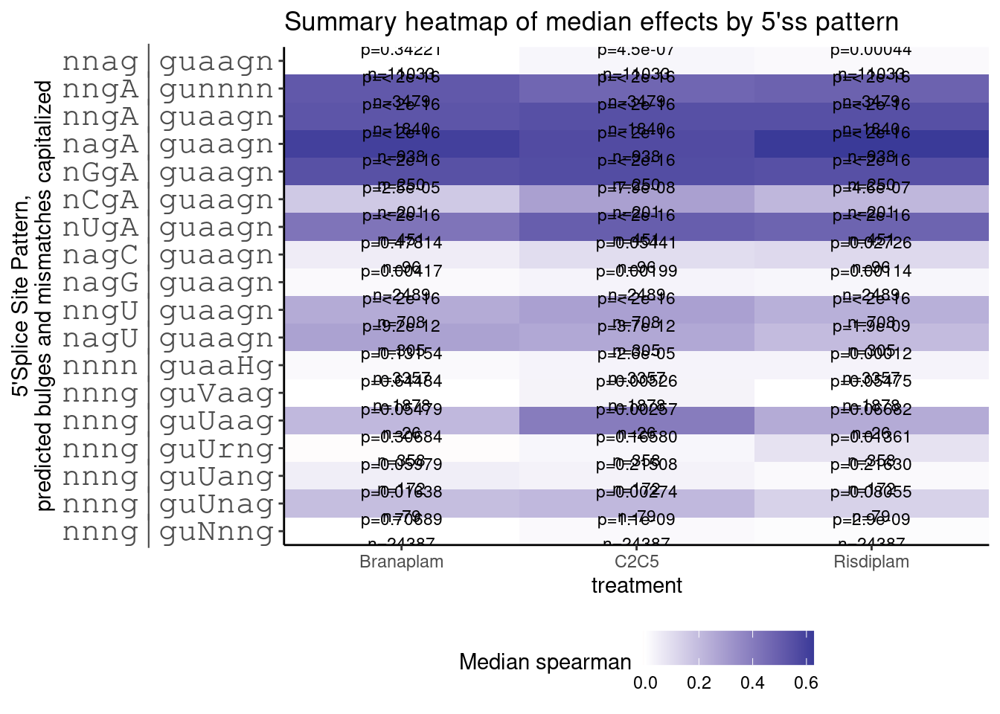
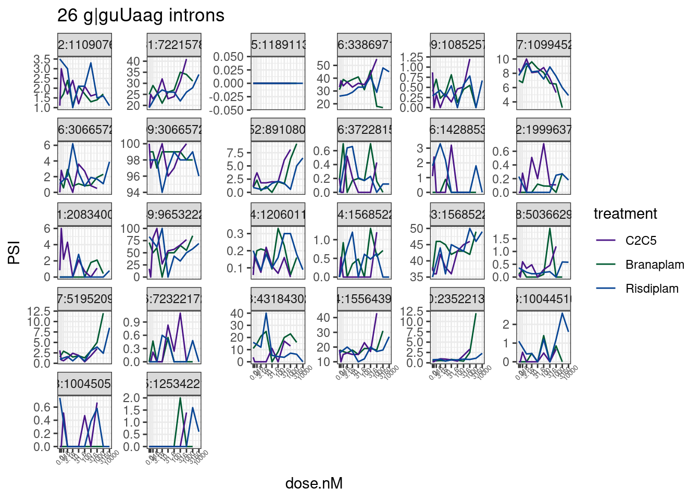
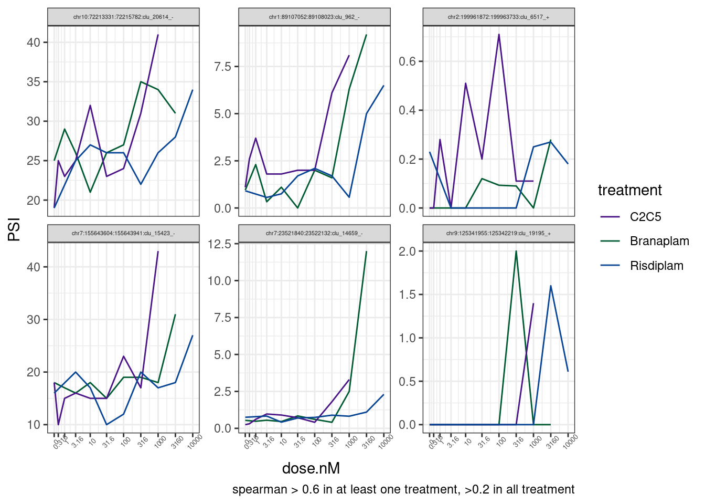
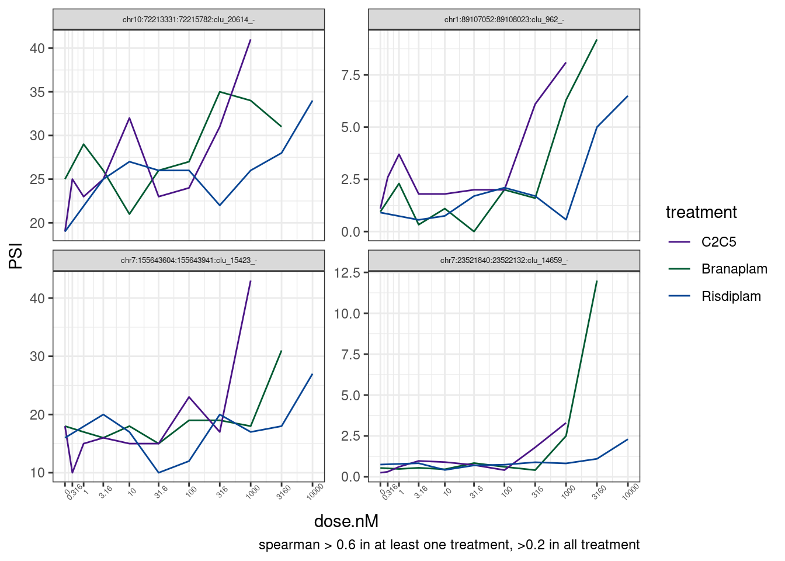

Last updated: 2023-03-22
Checks: 5 2
Knit directory:
20211209_JingxinRNAseq/analysis/
This reproducible R Markdown analysis was created with workflowr (version 1.7.0). The Checks tab describes the reproducibility checks that were applied when the results were created. The Past versions tab lists the development history.
The R Markdown is untracked by Git. To know which version of the R
Markdown file created these results, you’ll want to first commit it to
the Git repo. If you’re still working on the analysis, you can ignore
this warning. When you’re finished, you can run
wflow_publish to commit the R Markdown file and build the
HTML.
Great job! The global environment was empty. Objects defined in the global environment can affect the analysis in your R Markdown file in unknown ways. For reproduciblity it’s best to always run the code in an empty environment.
The command set.seed(19900924) was run prior to running
the code in the R Markdown file. Setting a seed ensures that any results
that rely on randomness, e.g. subsampling or permutations, are
reproducible.
Great job! Recording the operating system, R version, and package versions is critical for reproducibility.
Nice! There were no cached chunks for this analysis, so you can be confident that you successfully produced the results during this run.
Using absolute paths to the files within your workflowr project makes it difficult for you and others to run your code on a different machine. Change the absolute path(s) below to the suggested relative path(s) to make your code more reproducible.
| absolute | relative |
|---|---|
| /project2/yangili1/bjf79/20211209_JingxinRNAseq/code/bigwigs/unstranded/(.+?).bw | ../code/bigwigs/unstranded/(.+?).bw |
Great! You are using Git for version control. Tracking code development and connecting the code version to the results is critical for reproducibility.
The results in this page were generated with repository version c3a42e3. See the Past versions tab to see a history of the changes made to the R Markdown and HTML files.
Note that you need to be careful to ensure that all relevant files for
the analysis have been committed to Git prior to generating the results
(you can use wflow_publish or
wflow_git_commit). workflowr only checks the R Markdown
file, but you know if there are other scripts or data files that it
depends on. Below is the status of the Git repository when the results
were generated:
Ignored files:
Ignored: .DS_Store
Ignored: .Rhistory
Ignored: .Rproj.user/
Ignored: analysis/.RData
Ignored: analysis/.Rhistory
Ignored: analysis/20220707_TitrationSeries_DE_testing.nb.html
Ignored: code/.DS_Store
Ignored: code/._DOCK7.pdf
Ignored: code/._DOCK7_DMSO1.pdf
Ignored: code/._DOCK7_SM2_1.pdf
Ignored: code/._FKTN_DMSO_1.pdf
Ignored: code/._FKTN_SM2_1.pdf
Ignored: code/._MAPT.pdf
Ignored: code/._PKD1_DMSO_1.pdf
Ignored: code/._PKD1_SM2_1.pdf
Ignored: code/.snakemake/
Ignored: code/1KG_HighCoverageCalls.samplelist.txt
Ignored: code/5ssSeqs.tab
Ignored: code/Alignments/
Ignored: code/Branaplam_Risdiplam_specific_introns.bed.gz
Ignored: code/Branaplam_Risdiplam_specific_introns.bed.gz.tbi
Ignored: code/ChemCLIP/
Ignored: code/ClinVar/
Ignored: code/DE_testing/
Ignored: code/DE_tests.mat.counts.gz
Ignored: code/DE_tests.txt.gz
Ignored: code/DataNotToCommit/
Ignored: code/DoseResponseData/
Ignored: code/Fastq/
Ignored: code/FastqFastp/
Ignored: code/FragLenths/
Ignored: code/Meme/
Ignored: code/Multiqc/
Ignored: code/OMIM/
Ignored: code/OldBigWigs/
Ignored: code/PhyloP/
Ignored: code/QC/
Ignored: code/ReferenceGenomes/
Ignored: code/Session.vim
Ignored: code/Session2.vim
Ignored: code/SplicingAnalysis/
Ignored: code/TracksSession
Ignored: code/bigwigs/
Ignored: code/featureCounts/
Ignored: code/figs/
Ignored: code/geena/
Ignored: code/hg38ToMm39.over.chain.gz
Ignored: code/igv_session.template.xml
Ignored: code/igv_session.xml
Ignored: code/log
Ignored: code/logs/
Ignored: code/rstudio-server.job
Ignored: code/scratch/
Ignored: code/test.txt.gz
Ignored: code/testPlottingWithMyScript.ForJingxin.sh
Ignored: code/testPlottingWithMyScript.ForJingxin2.sh
Ignored: code/testPlottingWithMyScript.ForJingxin3.sh
Ignored: code/testPlottingWithMyScript.ForJingxin4.sh
Ignored: code/testPlottingWithMyScript.sh
Ignored: code/tracks.xml
Ignored: data/~$52CompoundsTempPlateLayoutForPipettingConvenience.xlsx
Ignored: output/._PioritizedIntronTargets.pdf
Untracked files:
Untracked: analysis/20230322_CandidateGUUAAG_bulges.Rmd
Unstaged changes:
Modified: code/scripts/GenometracksByGenotype
Note that any generated files, e.g. HTML, png, CSS, etc., are not included in this status report because it is ok for generated content to have uncommitted changes.
There are no past versions. Publish this analysis with
wflow_publish() to start tracking its development.
I previously found in both the fibroblast experiment and the LCL dose titration experiment that 5’ss with ag|guUaag sequence are upregulated after treatment, suggesting these molecules may also have some potential to stabilize this novel +3U bulge. Granted, there are only 20 or so detected 5’ss with this sequence. So while it is quite rare in the genome, I think it is still exciting that these molecules may stabilize bulges at other positions, which opens the door to target different sets of splice sites, and by extension, different sets of genes, and the effects and specificity for these different sets might be chemically optimizeable. Let’s inspect the dose response curves a bit closer on these sets of ag|guUaag 5’ss, and identify candidate up-regulated splice junctions that Dylan can verify by qPCR.
Let’s start by first inspecting the dose response curves
library(tidyverse)
# read in sample metadata
sample.list <- read_tsv("../code/bigwigs/BigwigList.tsv",
col_names = c("SampleName", "bigwig", "group", "strand")) %>%
filter(strand==".") %>%
dplyr::select(-strand) %>%
mutate(old.sample.name = str_replace(bigwig, "/project2/yangili1/bjf79/20211209_JingxinRNAseq/code/bigwigs/unstranded/(.+?).bw", "\\1")) %>%
separate(SampleName, into=c("treatment", "dose.nM", "cell.type", "libType", "rep"), convert=T, remove=F, sep="_") %>%
left_join(
read_tsv("../code/bigwigs/BigwigList.groups.tsv", col_names = c("group", "color", "bed", "supergroup")),
by="group"
)
TreatmentColorsForLabels <- sample.list %>%
group_by(treatment) %>%
filter(dose.nM == max(dose.nM) | treatment == "DMSO") %>%
ungroup() %>%
distinct(treatment, .keep_all=T) %>%
arrange(dose.nM) %>%
mutate(vjust=row_number()*1.2)
TreatmentColorsForLabelsKey <- TreatmentColorsForLabels %>%
filter(!treatment=="DMSO") %>%
dplyr::select(treatment, color) %>% deframe()
TreatmentColorsLabels.Layer <- geom_text(
data = TreatmentColorsForLabels,
aes(label=treatment, color=color, vjust=vjust),
y=Inf, x=Inf, hjust=1.05
)
#Read in PSI
PSI.tidy <- read_tsv("../code/DoseResponseData/LCL/TidySplicingDoseData.txt.gz")First let’s reproduce that heatmap of bulges that I manually defined.
PSI.tidy %>%
distinct(junc, treatment, .keep_all=T) %>%
select(intron=junc, treatment, spearman, DonorSeq=seq) %>%
mutate(
`11_nnng|guUaag` = str_detect(DonorSeq, "^\\w\\w\\wGGTTAAG"),
`2_nngA|gunnnn` = str_detect(DonorSeq, "^\\w\\wGAGT"),
`3_nngA|guaagn` = str_detect(DonorSeq, "^\\w\\wGAGTAAG"),
`4_nagA|guaagn` = str_detect(DonorSeq, "^\\wAGAGTAAG\\w"),
`5_nGgA|guaagn` = str_detect(DonorSeq, "^\\wGGAGTAAG\\w"),
`6_nCgA|guaagn` = str_detect(DonorSeq, "^\\wCGAGTAAG\\w"),
`7_nUgA|guaagn` = str_detect(DonorSeq, "^\\wTGAGTAAG\\w"),
`7.2_nagC|guaagn` = str_detect(DonorSeq, "^\\wGACGTAAG\\w"),
`7.3_nagG|guaagn` = str_detect(DonorSeq, "^\\wGAGGTAAG\\w"),
`8_nngU|guaagn` = str_detect(DonorSeq, "^\\w\\wGTGTAAG"),
`9_nagU|guaagn` = str_detect(DonorSeq, "^\\wAGTGTAAG"),
`1_nnag|guaagn` = str_detect(DonorSeq, "^\\w\\wAGGTAAG\\w"),
`10_nnng|guVaag` = str_detect(DonorSeq, "^\\w\\w\\wGGT[ACG]AAG"),
`12_nnng|guUrng` = str_detect(DonorSeq, "^\\w\\w\\wGGTT[AG]\\wG"),
`13_nnng|guUang` = str_detect(DonorSeq, "^\\w\\w\\wGGTTA\\wG"),
`14_nnng|guUnag` = str_detect(DonorSeq, "^\\w\\w\\wGGTT\\wAG"),
`15_nnng|guNnng` = str_detect(DonorSeq, "^\\w\\w\\wGGT\\w\\w\\wG"),
`9.5_nnnn|guaaHg` = str_detect(DonorSeq, "^\\w\\w\\w\\wGTAA[ACT]G")
) %>%
filter_at(vars(-c("intron", "treatment", "spearman", "DonorSeq")), any_vars(. == T)) %>%
gather(key="Pattern", value="IsMatch", -c("intron", "treatment", "spearman", "DonorSeq")) %>%
filter(IsMatch) %>%
group_by(Pattern, treatment) %>%
summarise(median = median(spearman, na.rm = T),
p = wilcox.test(spearman, alternative="greater")$p.value,
n = sum(IsMatch)) %>%
ungroup() %>%
separate(Pattern, into = c("PlotOrder", "Pattern"), sep = "_", convert=T) %>%
arrange(PlotOrder) %>%
ggplot(aes(x=reorder(Pattern, desc(PlotOrder)), y=treatment, fill=median)) +
# geom_point(aes(size=-log10(p), color=median)) +
geom_tile() +
geom_text(aes(label=paste0("p=",format.pval(p, digits=2), "\nn=", n) ), size=3) +
# scale_fill_viridis_c(option = "E", limits = c(-1.3, 1.3)) +
# scale_fill_distiller(palette = "Spectral", limits = c(-1.3, 1.3)) +
scale_fill_gradient2(name="Median spearman") +
scale_x_discrete(expand = c(0, 0)) +
scale_y_discrete(expand = c(0, 0)) +
xlab("5'Splice Site Pattern,\npredicted bulges and mismatches capitalized") +
coord_flip() +
theme_classic() +
theme(axis.text.y=element_text(size=16, family="mono")) +
theme(legend.position="bottom") +
ggtitle("Summary heatmap of median effects by 5'ss pattern")
Not let’s plot dose response effect for all junctions with g|guUaag 5’ splice site.
PSI.tidy %>%
filter(str_detect(seq, "^\\w\\w\\wGGTTAAG")) %>%
distinct(junc)# A tibble: 26 × 1
junc
<chr>
1 chr1:89107052:89108023:clu_962_-
2 chr10:72213331:72215782:clu_20614_-
3 chr10:110901612:110907680:clu_20928_-
4 chr11:33869586:33869710:clu_21327_-
5 chr11:118910015:118911399:clu_22006_-
6 chr12:30665306:30665729:clu_23504_-
7 chr12:30665309:30665729:clu_23504_-
8 chr12:108525609:108525776:clu_24071_-
9 chr12:109939247:109945260:clu_24100_-
10 chr2:96529849:96532227:clu_4720_-
# … with 16 more rowsPSI.tidy %>%
filter(str_detect(seq, "^\\w\\w\\wGGTTAAG")) %>%
ggplot(aes(x=dose.nM, y=PSI, color=treatment)) +
geom_line() +
scale_color_manual(values=TreatmentColorsForLabelsKey) +
scale_x_continuous(trans="log1p", limits=c(0, 10000), breaks=c(10000, 3160, 1000, 316, 100, 31.6, 10, 3.16, 1, 0.316, 0), labels=c(10000, 3160, 1000, 316, 100, 31.6, 10, 3.16, 1, 0.316, 0)) +
facet_wrap(~junc, scales = "free_y") +
theme_bw() +
theme(axis.text.x = element_text(angle = 45, vjust = 1, size=5)) +
labs(title='26 g|guUaag introns') Wow, there’s only a few of those juncs that even look believable. Let’s more carefully look at the most believable ones. Ok, let’s just focus on those with a high spearman correlation coefficient for dose:response
PSI.tidy %>%
filter(str_detect(seq, "^\\w\\w\\wGGTTAAG")) %>%
group_by(junc) %>%
filter(any(spearman > 0.6) & all(spearman > .2)) %>%
ungroup() %>%
ggplot(aes(x=dose.nM, y=PSI, color=treatment)) +
geom_line() +
scale_color_manual(values=TreatmentColorsForLabelsKey) +
scale_x_continuous(trans="log1p", limits=c(0, 10000), breaks=c(10000, 3160, 1000, 316, 100, 31.6, 10, 3.16, 1, 0.316, 0), labels=c(10000, 3160, 1000, 316, 100, 31.6, 10, 3.16, 1, 0.316, 0)) +
facet_wrap(~junc, scales = "free_y") +
theme_bw() +
theme(axis.text.x = element_text(angle = 45, vjust = 1, size=5), strip.text.x = element_text(size=4)) +
labs(caption = 'spearman > 0.6 in at least one treatment, >0.2 in all treatment')
Ok, there are maybe four believable effects. Let’s single out those and look at them more carefully in IGV.
PSI.tidy %>%
filter(str_detect(seq, "^\\w\\w\\wGGTTAAG")) %>%
group_by(junc) %>%
filter(any(spearman > 0.6) & all(spearman > .2)) %>%
ungroup() %>%
distinct(junc)# A tibble: 6 × 1
junc
<chr>
1 chr1:89107052:89108023:clu_962_-
2 chr10:72213331:72215782:clu_20614_-
3 chr2:199961872:199963733:clu_6517_+
4 chr7:23521840:23522132:clu_14659_-
5 chr7:155643604:155643941:clu_15423_-
6 chr9:125341955:125342219:clu_19195_+juncsOfInterest <- c("chr1:89107052:89108023:clu_962_-", "chr10:72213331:72215782:clu_20614_-", "chr7:23521840:23522132:clu_14659_-", "chr7:155643604:155643941:clu_15423_-")
PSI.tidy %>%
filter(junc %in% juncsOfInterest) %>%
ggplot(aes(x=dose.nM, y=PSI, color=treatment)) +
geom_line() +
scale_color_manual(values=TreatmentColorsForLabelsKey) +
scale_x_continuous(trans="log1p", limits=c(0, 10000), breaks=c(10000, 3160, 1000, 316, 100, 31.6, 10, 3.16, 1, 0.316, 0), labels=c(10000, 3160, 1000, 316, 100, 31.6, 10, 3.16, 1, 0.316, 0)) +
facet_wrap(~junc, scales = "free_y") +
theme_bw() +
theme(axis.text.x = element_text(angle = 45, vjust = 1, size=5), strip.text.x = element_text(size=5)) +
labs(caption = 'spearman > 0.6 in at least one treatment, >0.2 in all treatment') Manually looking at those examples in IGV didn’t look so promising. The induced guUaag splice site doesn’t always make as much sense as clean examples like poison cassette exon in HTT.
sessionInfo()R version 4.2.0 (2022-04-22)
Platform: x86_64-pc-linux-gnu (64-bit)
Running under: CentOS Linux 7 (Core)
Matrix products: default
BLAS/LAPACK: /software/openblas-0.3.13-el7-x86_64/lib/libopenblas_haswellp-r0.3.13.so
locale:
[1] LC_CTYPE=en_US.UTF-8 LC_NUMERIC=C LC_TIME=C
[4] LC_COLLATE=C LC_MONETARY=C LC_MESSAGES=C
[7] LC_PAPER=C LC_NAME=C LC_ADDRESS=C
[10] LC_TELEPHONE=C LC_MEASUREMENT=C LC_IDENTIFICATION=C
attached base packages:
[1] stats graphics grDevices utils datasets methods base
other attached packages:
[1] forcats_0.5.1 stringr_1.4.0 dplyr_1.0.9 purrr_0.3.4
[5] readr_2.1.2 tidyr_1.2.0 tibble_3.1.7 ggplot2_3.3.6
[9] tidyverse_1.3.1
loaded via a namespace (and not attached):
[1] Rcpp_1.0.8.3 lubridate_1.8.0 assertthat_0.2.1 rprojroot_2.0.3
[5] digest_0.6.29 utf8_1.2.2 R6_2.5.1 cellranger_1.1.0
[9] backports_1.4.1 reprex_2.0.1 evaluate_0.15 httr_1.4.3
[13] highr_0.9 pillar_1.7.0 rlang_1.0.2 readxl_1.4.0
[17] rstudioapi_0.13 jquerylib_0.1.4 rmarkdown_2.14 labeling_0.4.2
[21] bit_4.0.4 munsell_0.5.0 broom_0.8.0 compiler_4.2.0
[25] httpuv_1.6.5 modelr_0.1.8 xfun_0.30 pkgconfig_2.0.3
[29] htmltools_0.5.2 tidyselect_1.1.2 workflowr_1.7.0 fansi_1.0.3
[33] crayon_1.5.1 tzdb_0.3.0 dbplyr_2.1.1 withr_2.5.0
[37] later_1.3.0 grid_4.2.0 jsonlite_1.8.0 gtable_0.3.0
[41] lifecycle_1.0.1 DBI_1.1.2 git2r_0.30.1 magrittr_2.0.3
[45] scales_1.2.0 vroom_1.5.7 cli_3.3.0 stringi_1.7.6
[49] farver_2.1.0 fs_1.5.2 promises_1.2.0.1 xml2_1.3.3
[53] bslib_0.3.1 ellipsis_0.3.2 generics_0.1.2 vctrs_0.4.1
[57] tools_4.2.0 bit64_4.0.5 glue_1.6.2 hms_1.1.1
[61] parallel_4.2.0 fastmap_1.1.0 yaml_2.3.5 colorspace_2.0-3
[65] rvest_1.0.2 knitr_1.39 haven_2.5.0 sass_0.4.1